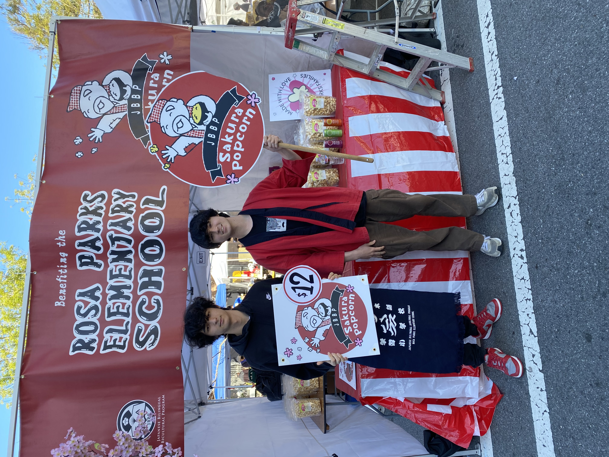
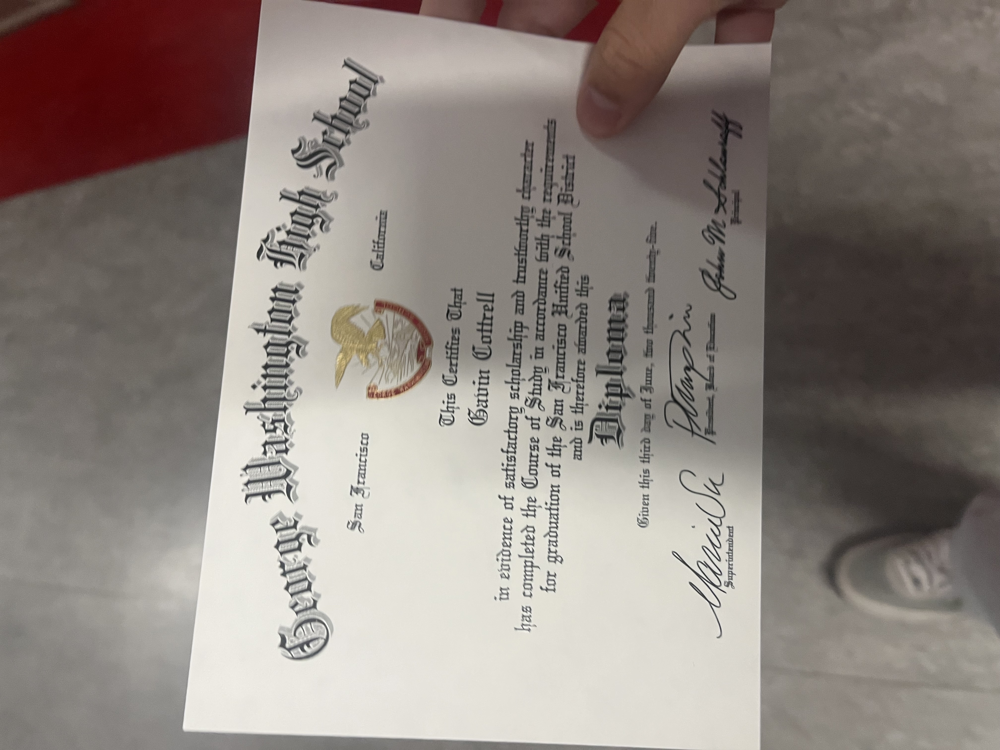
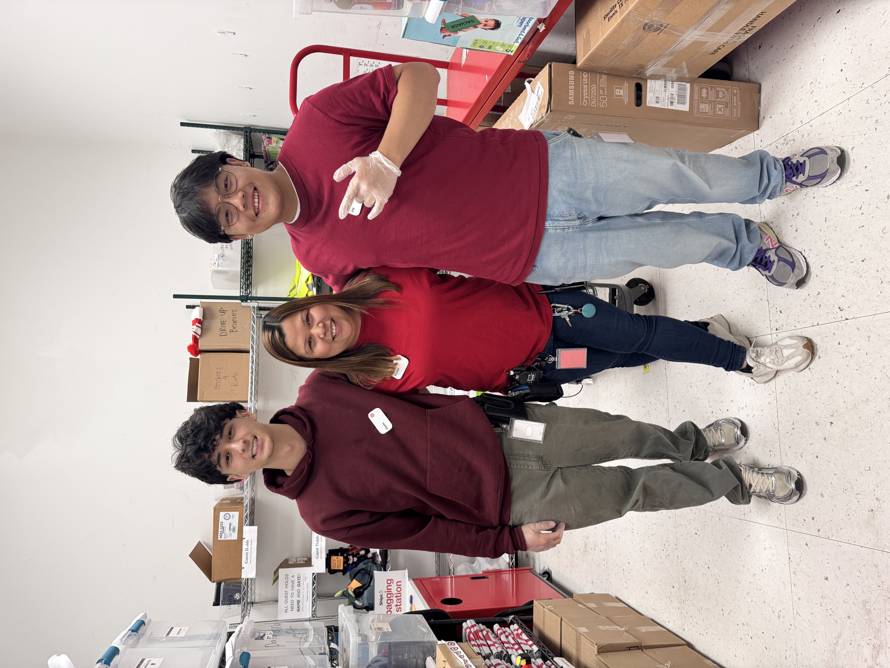
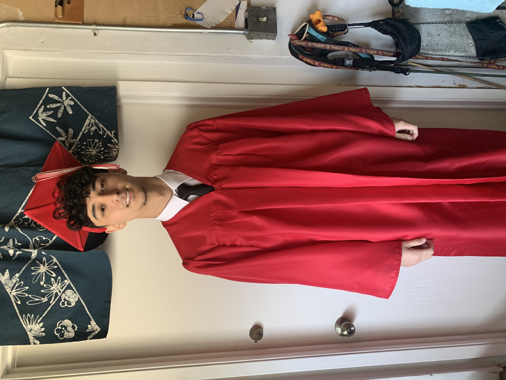

My name is Gavin Cottrell, I am currently a second year student at the University of California, Riverside, pursing an education in Business Administration. I am passionate about business, management, and decision making. My academic journey has allowed me to develop an interest in business management. I am working continuosly to strengthen my knowledge and devlop skills that will further prepare me for a successful professional career. Throughout my professional experience, I have had the opportunity to work at Target, where I gained valuable experience in customer service, retail operations, and teamwork. My responsibilities included assisting customers, operating registers, and ensuring customers had a positive shopping experience. Working in a fast paced retail enviornment taught me the importance of communication, time management, adaptability, and problem-solving. I learned how to manage multiple responsibilities while maintaining professsionalism and providing excellent service. These experiences helped me understand how businesses operate and the importance of customer satisfaction. As a student studying business administraion I am particularly interested how organizations use information to improve efficency, and make decisions. Through my coursework, I'm developing a stronger understanding of business principles, economics, and critical thinking. I value personal development, disclipine, and continuous improvement. I believe success comes from maintaining a strong work ethic, being willing to learn from challenges, and consistently working toward meaningful goals. Balancing my responsibilities as a college student with my professional experience has helped me develop independence, accountability, and organizational skills. I enjoy challenging myself to learn new concepts and explore opportunities that contribute to my personal and professional growth. I look forward to the future, my ultimate goal is to build a career in business administation with a concentration in management, or a related field where I can combine my analytical abilities with my interest in business operations. I hope to work in an enivornment that encourages innovation, collaboration, and professional development. I am especially interested in opportunities that allow me to solve complex problems, evaluate business performance, and contribute to success. Ultimately, I would like to use my education, experience, and determination to create meaningful opportunities for myself and make a positive impact in the business world. I am committed to continuingmy education, developing valuable professional relationships, and building the skills necessary to achieve my long-term career goals.
• Assisted customers with purchases, returns, and questions.
• Operated cash register and processed transactions.
• Fufilled online orders through order pickup services
• Packing medication
• Delivering medication to those in need
• Tracking incoming packages and invoices
• Making flyers for community around the neighrborhood



